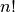
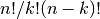

Basic functions¶
Contents
Interaction with Numpy¶
Scipy builds on Numpy, and for all basic array handling needs you can use Numpy functions:
>>> import numpy as np
>>> np.some_function()
Rather than giving a detailed description of each of these functions (which is available in the Numpy Reference Guide or by using the help, info and source commands), this tutorial will discuss some of the more useful commands which require a little introduction to use to their full potential.
To use functions from some of the Scipy modules, you can do:
>>> from scipy import some_module
>>> some_module.some_function()
The top level of scipy also contains functions from numpy and numpy.lib.scimath. However, it is better to use them directly from the numpy module instead.
Index Tricks¶
There are some class instances that make special use of the slicing functionality to provide efficient means for array construction. This part will discuss the operation of np.mgrid , np.ogrid , np.r_ , and np.c_ for quickly constructing arrays.
For example, rather than writing something like the following
>>> concatenate(([3],[0]*5,arange(-1,1.002,2/9.0)))
with the r_ command one can enter this as
>>> r_[3,[0]*5,-1:1:10j]
which can ease typing and make for more readable code. Notice how objects are concatenated, and the slicing syntax is (ab)used to construct ranges. The other term that deserves a little explanation is the use of the complex number 10j as the step size in the slicing syntax. This non-standard use allows the number to be interpreted as the number of points to produce in the range rather than as a step size (note we would have used the long integer notation, 10L, but this notation may go away in Python as the integers become unified). This non-standard usage may be unsightly to some, but it gives the user the ability to quickly construct complicated vectors in a very readable fashion. When the number of points is specified in this way, the end- point is inclusive.
The “r” stands for row concatenation because if the objects between commas are 2 dimensional arrays, they are stacked by rows (and thus must have commensurate columns). There is an equivalent command c_ that stacks 2d arrays by columns but works identically to r_ for 1d arrays.
Another very useful class instance which makes use of extended slicing notation is the function mgrid. In the simplest case, this function can be used to construct 1d ranges as a convenient substitute for arange. It also allows the use of complex-numbers in the step-size to indicate the number of points to place between the (inclusive) end-points. The real purpose of this function however is to produce N, N-d arrays which provide coordinate arrays for an N-dimensional volume. The easiest way to understand this is with an example of its usage:
>>> mgrid[0:5,0:5]
array([[[0, 0, 0, 0, 0],
[1, 1, 1, 1, 1],
[2, 2, 2, 2, 2],
[3, 3, 3, 3, 3],
[4, 4, 4, 4, 4]],
[[0, 1, 2, 3, 4],
[0, 1, 2, 3, 4],
[0, 1, 2, 3, 4],
[0, 1, 2, 3, 4],
[0, 1, 2, 3, 4]]])
>>> mgrid[0:5:4j,0:5:4j]
array([[[ 0. , 0. , 0. , 0. ],
[ 1.6667, 1.6667, 1.6667, 1.6667],
[ 3.3333, 3.3333, 3.3333, 3.3333],
[ 5. , 5. , 5. , 5. ]],
[[ 0. , 1.6667, 3.3333, 5. ],
[ 0. , 1.6667, 3.3333, 5. ],
[ 0. , 1.6667, 3.3333, 5. ],
[ 0. , 1.6667, 3.3333, 5. ]]])
Having meshed arrays like this is sometimes very useful. However, it is not always needed just to evaluate some N-dimensional function over a grid due to the array-broadcasting rules of Numpy and SciPy. If this is the only purpose for generating a meshgrid, you should instead use the function ogrid which generates an “open” grid using newaxis judiciously to create N, N-d arrays where only one dimension in each array has length greater than 1. This will save memory and create the same result if the only purpose for the meshgrid is to generate sample points for evaluation of an N-d function.
Shape manipulation¶
In this category of functions are routines for squeezing out length- one dimensions from N-dimensional arrays, ensuring that an array is at least 1-, 2-, or 3-dimensional, and stacking (concatenating) arrays by rows, columns, and “pages “(in the third dimension). Routines for splitting arrays (roughly the opposite of stacking arrays) are also available.
Polynomials¶
There are two (interchangeable) ways to deal with 1-d polynomials in SciPy. The first is to use the poly1d class from Numpy. This class accepts coefficients or polynomial roots to initialize a polynomial. The polynomial object can then be manipulated in algebraic expressions, integrated, differentiated, and evaluated. It even prints like a polynomial:
>>> p = poly1d([3,4,5])
>>> print p
2
3 x + 4 x + 5
>>> print p*p
4 3 2
9 x + 24 x + 46 x + 40 x + 25
>>> print p.integ(k=6)
3 2
x + 2 x + 5 x + 6
>>> print p.deriv()
6 x + 4
>>> p([4,5])
array([ 69, 100])
The other way to handle polynomials is as an array of coefficients with the first element of the array giving the coefficient of the highest power. There are explicit functions to add, subtract, multiply, divide, integrate, differentiate, and evaluate polynomials represented as sequences of coefficients.
Vectorizing functions (vectorize)¶
One of the features that NumPy provides is a class vectorize to convert an ordinary Python function which accepts scalars and returns scalars into a “vectorized-function” with the same broadcasting rules as other Numpy functions (i.e. the Universal functions, or ufuncs). For example, suppose you have a Python function named addsubtract defined as:
>>> def addsubtract(a,b):
... if a > b:
... return a - b
... else:
... return a + b
which defines a function of two scalar variables and returns a scalar result. The class vectorize can be used to “vectorize “this function so that
>>> vec_addsubtract = vectorize(addsubtract)
returns a function which takes array arguments and returns an array result:
>>> vec_addsubtract([0,3,6,9],[1,3,5,7])
array([1, 6, 1, 2])
This particular function could have been written in vector form without the use of vectorize . But, what if the function you have written is the result of some optimization or integration routine. Such functions can likely only be vectorized using vectorize.
Type handling¶
Note the difference between np.iscomplex/np.isreal and np.iscomplexobj/np.isrealobj. The former command is array based and returns byte arrays of ones and zeros providing the result of the element-wise test. The latter command is object based and returns a scalar describing the result of the test on the entire object.
Often it is required to get just the real and/or imaginary part of a complex number. While complex numbers and arrays have attributes that return those values, if one is not sure whether or not the object will be complex-valued, it is better to use the functional forms np.real and np.imag . These functions succeed for anything that can be turned into a Numpy array. Consider also the function np.real_if_close which transforms a complex-valued number with tiny imaginary part into a real number.
Occasionally the need to check whether or not a number is a scalar (Python (long)int, Python float, Python complex, or rank-0 array) occurs in coding. This functionality is provided in the convenient function np.isscalar which returns a 1 or a 0.
Finally, ensuring that objects are a certain Numpy type occurs often enough that it has been given a convenient interface in SciPy through the use of the np.cast dictionary. The dictionary is keyed by the type it is desired to cast to and the dictionary stores functions to perform the casting. Thus, np.cast['f'](d) returns an array of np.float32 from d. This function is also useful as an easy way to get a scalar of a certain type:
>>> np.cast['f'](np.pi)
array(3.1415927410125732, dtype=float32)
Other useful functions¶
There are also several other useful functions which should be mentioned. For doing phase processing, the functions angle, and unwrap are useful. Also, the linspace and logspace functions return equally spaced samples in a linear or log scale. Finally, it’s useful to be aware of the indexing capabilities of Numpy. Mention should be made of the function select which extends the functionality of where to include multiple conditions and multiple choices. The calling convention is select(condlist,choicelist,default=0). select is a vectorized form of the multiple if-statement. It allows rapid construction of a function which returns an array of results based on a list of conditions. Each element of the return array is taken from the array in a choicelist corresponding to the first condition in condlist that is true. For example
>>> x = r_[-2:3]
>>> x
array([-2, -1, 0, 1, 2])
>>> np.select([x > 3, x >= 0],[0,x+2])
array([0, 0, 2, 3, 4])
Some additional useful functions can also be found in the module scipy.misc. For example the factorial and comb functions compute  and  using either exact integer arithmetic (thanks to Python’s Long integer object), or by using floating-point precision and the gamma function. Another function returns a common image used in image processing: lena.
Finally, two functions are provided that are useful for approximating
derivatives of functions using discrete-differences. The function
central_diff_weights returns weighting coefficients for an
equally-spaced  -point approximation to the derivative of
order o. These weights must be multiplied by the function
corresponding to these points and the results added to obtain the
derivative approximation. This function is intended for use when only
samples of the function are avaiable. When the function is an object
that can be handed to a routine and evaluated, the function
derivative can be used to automatically evaluate the object at
the correct points to obtain an N-point approximation to the o-th
derivative at a given point.
-point approximation to the derivative of
order o. These weights must be multiplied by the function
corresponding to these points and the results added to obtain the
derivative approximation. This function is intended for use when only
samples of the function are avaiable. When the function is an object
that can be handed to a routine and evaluated, the function
derivative can be used to automatically evaluate the object at
the correct points to obtain an N-point approximation to the o-th
derivative at a given point.